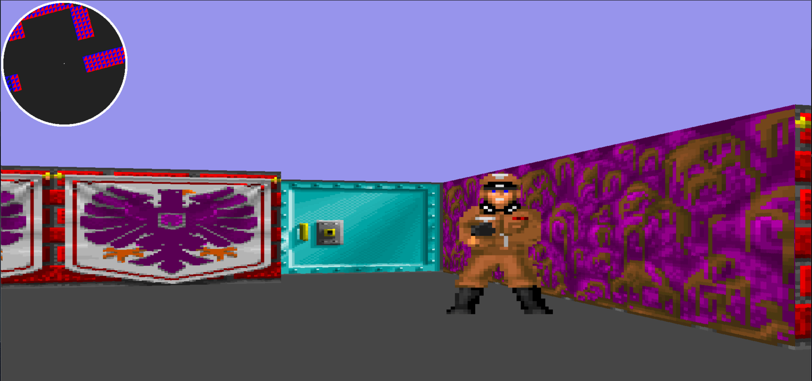

Cube3d
Contexte
Ce projet de groupe proposé par l'école 42, offre la possibilité de créer un jeu vidéo en vue première personne en langage C.
L'objectif est de pouvoir se déplacer dans un environnement en pseudo 3D.
Cube3d est un excellent projet pour découvrir les applications concrètes des mathématiques, mais également pour comprendre l'organisation, qui se trouve derrière le code des jeux vidéos.
C'est avec Anas Zanane que nous réaliserons ce projet.
Réalisation
Librairie graphique
Le sujet impose l'utilisation de la librairie graphique : MiniLibX.
Cette librairie offre la possibilité de créer une fenêtre, gérer différents types d'événements ou encore dessiner sur des images.
Création d'une fenêtre
Voici la manière la plus simple de créer une fenêtre à partir de la MiniLibX.
La fonction mlx_init renvoie un pointeur qui indique où se trouve l'instance de la mlx dans la mémoire. Le rôle de cette instance, est d'établir une connexion entre notre programme et l'environnement graphique de l'ordinateur.
La fonction mlx_new_window permet de définir la taille de la fenêtre ainsi que son titre.
int main(void)
{
void *mlx;
void *mlx_win;
mlx = mlx_init();
mlx_win = mlx_new_window(mlx, 1920, 1080, "A simple window");
mlx_loop(mlx);
}
C'est la fonction mlx_loop qui s'occupe d'actualiser et d'afficher la fenêtre sur notre écran.
Nous allons à présent rendre cette fenêtre un peu plus intéressante en dessinant dessus.
Utilisation des images
Il existe la fonction mlx_pixel_put qui permet de placer des pixels sur notre fenêtre, cependant cette fonction est extrêmement lente car elle place le pixel puis actualise directement l'affichage.
Par conséquent, j’ai opté pour un moyen plus optimisé, celui de stocker tous les pixels que l'on souhaite placer (à l'aide d'un buffer), et seulement lorsque tous les pixels sont stockés, la fenêtre met à jour son contenu.
Le moyen de stocker les pixels est d'utiliser une image.
Cela implique de déclarer quelques variables supplémentaires comme :
- Une référence a l'instance de l'image
- L'adresse mémoire de l'image
- Le nombre de bits que chaque pixel occupe
- La taille en mémoire qu'occupe une ligne de l'image
- Une indication de quel boutiste (endian en anglais) utiliser
typedef struct s_data {
void *img;
char *addr;
int bits_per_pixel;
int line_length;
int endian;
} t_data;
int main(void)
{
void *mlx;
t_data img;
mlx = mlx_init();
img.img = mlx_new_image(mlx, 1920, 1080);
img.addr = mlx_get_data_addr(img.img, &img.bits_per_pixel, &img.line_length, &img.endian);
}
Notre image (ici de dimension 1920 par 1080 pixels) est créée grâçe à la fonction mlx_new_image
Les informations supplémentaires décrites précédemment sont assignées par la fonction mlx_get_data_addr.
Écriture sur une image
Le dernier élément manquant est un moyen de placer des pixels sur notre image.
La fonction suivante permet, à partir d'une position dans l'image (une paire de coordonnées x et y), d'écrire une certaine valeur (représentant une couleur) à l'endroit correspondant dans la mémoire de l'image.
void my_mlx_pixel_put(t_data *data, int x, int y, int color)
{
char *dst;
dst = data->addr + (y * data->line_length + x * (data->bits_per_pixel / 8));
*(unsigned int*)dst = color;
}
Les informations de l'image sont ici extrêmement utiles, elles nous permettent de trouver le décalage entre la position de chaque pixel et son emplacement dans la mémoire.
Il peut également être utile de vérifier la cohérence des coordonnées en début de fonction. Il se peut autrement que le programme aille chercher des données dans un espace mémoire ne lui appartenant pas, ce qui causerait l'arrêt du programme.
Affichage de l'image
Le moment tant attendu arrive, celui où nous allons voir des couleurs sur notre fenêtre !
A l'aide des notions expliquées jusqu'ici (initialisation d'une fenêtre et d'une image ainsi que la structure data) nous allons appeler my_mlx_pixel_put et afficher le contenu de l'image sur notre fenêtre.
int main(void)
{
void *mlx;
void *mlx_win;
t_data img;
mlx = mlx_init();
mlx_win = mlx_new_window(mlx, 1920, 1080, "A simple window");
img.img = mlx_new_image(mlx, 1920, 1080);
img.addr = mlx_get_data_addr(img.img, &img.bits_per_pixel, &img.line_length, &img.endian);
my_mlx_pixel_put(&img, 100, 100, 0x00FF0000);
mlx_put_image_to_window(mlx, mlx_win, img.img, 0, 0);
mlx_loop(mlx);
}
Ce petit code a pour effet de placer un pixel rouge (explications du fonctionnement des couleurs de la MiniLibX) à la position (en pixels) (100, 100) de notre fenêtre.
C'est ensuite mlx_put_image_to_window qui met à jour la fenêtre en affichant le contenu de notre image.
Boucles
Pour créer un jeu vidéo avec lequel il est possible d'interagir, il est nécessaire d'implémenter ce qu'on appelle une "game loop".
Une game loop tourne en continu pendant l'exécution du jeu. À chaque tour de boucle, le programme lit les entrées de l'utilisateur, met à jour le contenu du jeu puis actualise l'affichage.
Voyons comment implémenter cette boucle a l'aide de la MiniLibX.
int render_next_frame(void *program_struct);
int main(void)
{
void *mlx;
t_struct program_struct;
mlx = mlx_init();
mlx_loop_hook(mlx, render_next_frame, &program_struct);
mlx_loop(mlx);
}À chaque frame, la fonction render_next_frame sera appelée avec pour paramètre program_struct.
Entrées utilisateur
Un jeu vidéo ne serait pas très intéressant sans possibilités d'interaction.
La MiniLibX fournit la possibilité d'intercepter différents types d'événements.
Ces événements (par exemple liés à la souris ou au clavier) ne font qu'appeler une fonction quand ils se déclenchent.
Plus concrètement, au début du programme, il faut indiquer à la MiniLibX quels sont les événements à écouter, et quelles fonctions seront appelées à leur déclenchement.
Les événements sont représentés par des nombres ; voici une liste (minime) des événements qui nous seront utiles :
- 02 : Touche du clavier pressée
- 03 : Touche du clavier relâchée
- 04 : Bouton de la souris pressé
- 05 : Bouton de la souris relâché
- 06 : Mouvement de la souris
- 17 : Clic sur la croix rouge de la fenêtre
int key_press(int keycode, t_struct *program_struct)
{
printf("Key pressed : %d\n", keycode);
return (0);
}
int main(void)
{
void *mlx;
void *mlx_win;
t_struct program_struct;
mlx = mlx_init();
mlx_win = mlx_new_window(mlx, 1920, 1080, "A simple window");
mlx_hook(mlx_win, 2, 0, key_press, &program_struct);
mlx_loop(mlx);
}
Rappelons que les actions effectuées en fonction des entrées utilisateur (par exemple déplacer le personnage du joueur) se font dans la game loop précédemment implémentée.
Les événements ne vont donc pas agir sur les données du jeu (personnage, carte, interface ou autre), mais uniquement mettre à jour les informations liées aux commandes (état des touches du clavier, position du curseur, état des cliques de la souris).
Cela implique pour notre programme d'avoir un moyen de stocker les données des périphériques.
Pour le clavier, il est possible de créer un tableau de booléens (de longueur le nombre de touches du clavier) qui contient pour chaque touche, true si elle est enfoncée, et false sinon.
Voici le code permettant de gérer un tel tableau (d'une taille de 200 booléens) à l'aide des hooks 02 et 03.
int key_press(int keycode, t_struct *prg_struct)
{
if (keycode < 200)
prg_struct->keyboard[keycode] = 1;
return (0);
}
int key_release(int keycode, t_struct *prg_struct)
{
if (keycode < 200)
prg_struct->keyboard[keycode] = 0;
return (0);
}Ainsi, dans le game loop il ne reste qu'à vérifier si une touche est enfoncée à l'aide de la case correspondante du tableau pour effectuer une action.
Définition de raycasting
Notamment connu pour les célèbres Doom et Wolfenstein 3D (dans les années 1990),
le raycasting 2D est une technique de calcul d'images permettant de naviguer en vue première personne dans un monde 3D, à partir d'une carte en 2D, composée de vides de murs.
Le principe consiste à tirer une multitude de rayons (depuis la position du joueur), et d'afficher les murs et ennemis, en fonction de la distance d'impact des rayons lancés.
Cette technique est extrêmement efficace car au lieu de lancer un rayon pour chaque pixel de l'écran, elle ne lance qu'un rayon par tranche verticale de pixel, ce qui réduit drastiquement le nombre de calculs.
Fondamentaux
Représentation de la carte
Comme dit précédemment, le raycasting se base sur un univers en deux dimensions (vu du dessus).
Voyons, pour commencer, comment représenter informatiquement une carte contenant des espaces vides et des murs.
Le moyen le plus simple est d'utiliser un tableau a deux dimensions. Chacune de ses cellules aura une valeur que nous pourrons utiliser pour afficher notre monde (par exemple 1 pour un mur et 0 pour un espace vide). Un désavantage majeur de ce choix est que nous sommes contraints d'avoir un résultat où toutes les surfaces seront quadrillées.
Pour faciliter l'accès à nos données, nous utiliserons une structure nommée data. Pour l'instant, elle ne contient que les éléments de la MiniLibX et les données utiles à notre tableau.
typedef struct s_data {
// MiniLibX
void *mlx;
void *mlx_win;
void *img;
char *addr;
int bits_per_pixel;
int line_length;
int endian;
int win_height;
int win_width;
// Tab
int **tab;
int tab_width;
int tab_height;
} t_data;
Il est important de dissocier les dimensions de la fenêtre (win_height et win_width qui sont en pixels) des dimensions du tableau
(tab_height et tab_width qui indiquent la hauteur et largeur du tableau en nombre de cellules).
Voyons maintenant comment créer notre tableau à deux dimensions.
Par la suite, pour visualiser le contenu du tableau, nous allons mettre un mur toutes les deux cellules (un mur étant la valeur 1).
int init_tab(t_data *data)
{
// Setting initial tab dimensions
data->tab_height = 15;
data->tab_width = 20;
// Allocating tab
data->tab = malloc(sizeof(int *) * data->tab_height);
if (data->tab == NULL) // Checking allocation error
return (1);
for (int y = 0; y < data->tab_height; y++)
{
data->tab[y] = malloc(sizeof(int) * data->tab_width);
if (data->tab[y] == NULL) // Checking allocation error
return (1);
// Putting values in tab
for (int x = 0; x < tab_width; x++)
{
data->tab[y][x] = (y % 2 + x) % 2;
}
}
return (0);
}Affichage de la carte
L'objectif est désormais d'afficher sur notre fenêtre le contenu du tableau tout juste créé.
Ici la difficulté est de passer des coordonnées dans le tableau aux coordonnées en pixels dans la fenêtre.
La première chose à faire est de définir la taille (en pixel) que prendront nos cellules sur l'écran. Cette variable, ici nommée cell_size, est stockée dans notre structure data.
Dans tous les exemples se trouvant sur cette page, cell_size est prise égale à 40.
void print_grid(t_data *data)
{
for (int y = 0; y < tab_height; y++)
{
for (int x = 0; x < tab_width; x++)
{
// Calculating square coordinates
t_vector2_d top_left = {
x * data->cell_size, // x
y * data->cell_size // y
};
t_vector2_d bottom_right = {
top_left.x + data->cell_size,
top_left.y + data->cell_size
};
// Drawing square
if (data->tab[y][x] == 1) // If the cell is a wall
{
draw_rect_color(data, top_left, bottom_right, PINK);
}
}
}
}
Voici le résultat obtenu lorsque l'on affiche le tableau précédemment généré. Le damier provient de la formule b = (y % 2 + x) % 2 appliquée à chaque cellule (où b est la valeur donnée à la cellule de coordonnées (x, y)), utilisée lors de la création du tableau. Je vous invite cependant à utiliser d'autres formules d'initialisation pour créer différents motifs.
Modification de la carte
Maintenant que nous avons la possibilité de visualiser le tableau, nous pouvons essayer de le modifier pendant l'exécution du programme.
À la fin, nous pourrons placer des murs à l'aide du clic gauche, et les supprimer avec le clic droit de la souris.
Cette fois-ci, le problème est de convertir la position de la souris sur la fenêtre (qui est en pixels) en coordonnées de cellules.
Encore une fois, c'est cell_size qui va nous nous aider à résoudre ce problème.
void set_grid_cell(t_data *data, int x, int y)
{
// Converting pixel coordinates into tab coordinates
t_vector2_d tab_pos = {
x / data->cell_size, // x
y / data->cell_size // y
};
// Checking out of range coordinates
if (x < 0 || x >= data->tab_width || y < 0 || y >= data->tab_height)
return;
// Changing cell value according to mouse button
if (data->mouse_button == LMB)
data->tab[tab_pos.y][tab_pos.x] = 1;
else if (data->mouse_button == RMB)
data->tab[tab_pos.y][tab_pos.x] = 0;
}
Cette fonctionnalité nous sera très utile pour tester l'implémentation de notre premier lancer de rayons.
Il va consister à analyser la collision entre un mur et un rayon (défini par une droite tracée depuis la position du joueur et suivant une direction, elle-même définie par un autre point sur la carte).
Détection de collision
Pour aborder les choses simplement, commençons par créer un rayon allant du centre de la fenêtre à la position du curseur.
Rien de plus simple, à l'aide d'une fonction de tracé de segments (l'algorithme de Bresenham dans l'exemple), on relie le centre de l'écran et la souris.
L'idée ici est d'afficher l'endroit où le rayon entre en collision avec un mur.
Il existe de nombreux moyens de faire ceci. Le moyen le plus simple serait de vérifier pour chaque pixel sur lequel passe le rayon, si celui-ci appartient à un mur.
Cependant, dès que le nombre de rayons augmente, cette option devient extrêmement coûteuse et inutilisable en pratique.
Une méthode un peu plus élégante et adaptée à notre situation est l'analayseur différentiel numérique (plus connu sous son acronyme anglais : DDA).
Cet algorithme est utilisé pour faire varier des données depuis un point de départ, suivant une direction donnée par un point d'arrivée sur la carte.
Explications détaillées de la DDA
L'objectif est de parcourir toutes les cellules sur une droite partant de la position du joueur, selon une direction définie par un autre point sur la carte. Le rayon s'arrête lors d'une collision avec un mur détectée par la DDA
Grace à ces deux points, nous pouvons déterminer le chemin à emprunter ; la difficulté est de pouvoir passer d'une cellule
à l'autre de manière optimisée (ne pas scruter deux fois le même endroit ou ne pas rater de cellules).
Nous voulons également être le plus précis possible étant donné que la position du joueur sera définie par des nombres à virgule.
Comme on évolue sur une grille carrée, on se déplace sur un rayon depuis la position du joueur par pas de 1 pixel, selon la verticale ou l'horizontale.
Pour ne rater aucune des cellules sur lesquelles passe notre rayon, il faut avancer à chaque pas suivant l'axe qui occasionne le plus petit avancement sur le rayon.
Mesurer l'avancement sur un segment se fait en utilisant les propriétés du triangle rectangle.
Il est possible de calculer la longueur parcourue sur une droite avec une direction quelconque pour un avancement de 1 pixel (selon l'axe horizontal ou selon l'axe vertical) en utilisant la pente de la droite, connue.
La dernière étape est d'avancer selon l'axe qui fait parcourir la plus petite distance sur la droite, et réitérer jusqu'à rencontrer une collision.
Comme indiqué précédemment, la position de notre joueur n'aura pas forcément des coordonnées entières. Il faut donc initialement calculer l'écart entre la position de départ et les coordonnées entières les plus proches.
Les deux morceaux de code qui suivent proviennent de la page Lode's Computer Graphics Tutorial ainsi que du tutoriel de javidx9 sur le raycasting que vous pouvez consulter pour avoir les détails des calculs.
La première étape de la DDA consiste à initialiser toutes les données dont nous avons besoin.
t_vector2_f dda(t_data *data, t_vector2_f dest)
{
t_vector2_d origin = {win_width / 2, win_height / 2};
t_vector2_d map = vector_f_to_d(origin); // Position used to check tab value
t_vector2_f dir = {dest.x - origin.x, dest.y - origin.y};
t_vector2_f side_dist; // Origin point offset to the nearest int positon
t_vector2_f delta_dist; // Length of the hyptenuse
delta_dist.x = (dir.x == 0) ? 1e30 : ft_abs(1.0f / dir.x); // 1e30 is a large value
delta_dist.y = (dir.y == 0) ? 1e30 : ft_abs(1.0f / dir.y);
t_vector2_d step;
if (dir.x < 0)
{
step.x = -1; // Calculating X step (depending on the direction)
side_dist.x = (origin.x - map.x) * delta_dist.x; // Calculating X gap to the nearest integer coordinate
}
else
{
step.x = 1;
side_dist.x = (map.x + 1.0f - origin.x) * delta_dist.x;
}
if (dir.y < 0)
{
step.y = -1; // Calculating Y step (depending on the direction)
side_dist.y = (origin.y - map.y) * delta_dist.y; // Calculating Y gap to the nearest integer coordinate
}
else
{
step.y = 1;
side_dist.y = (map.y + 1.0f - origin.y) * delta_dist.y;
}
}
Maintenant que nous savons comment parcourir un rayon, il est temps de partir à la recherche d'une collision.
Voici une version extrêmement simple de la DDA.
Le code suivant est la suite de la fonction DDA
while (1)
{
if (side_dist.x < side_dist.y)
{
side_dist.x += delta_dist.x;
map.x += step.x;
}
else
{
side_dist.y += delta_dist.y;
map.y += step.y;
}
// Converting pixel coordinates to tab coordinates
t_vector2_d cell = {
map.x / data->cell_size,
map.y / data->cell_size
};
if (data->tab[cell.y][cell.x] == 1) // Is a wall
{
return (vector_d_to_f(map));
}
}
La vidéo suivante montre une démonstration de la DDA. A partir d'un point de départ (ici le centre de l'écran) le programme va prendre comme direction la position du curseur. Il va alors parcourir toutes les cellules dans cette direction jusqu'à rencontrer une collision, représentée par un cercle vert.
Bien évidemment, si la carte n'est pas entourée de murs, le programme continuera ses calculs à l'infini (causant un magnifique plantage de l'application).
Il faut donc bien faire attention à deux choses :
- Imposer une distance maximale de recherche de collision
- Vérifier que les coordonnées (en pixels) soient dans la portée du tableau (sous peine de créer une erreur de segmentation)
Dans le cas où la DDA ne rencontre pas de collision, il faut définir quelle valeur celle-ci retourne.
Étant donné que les coordonnées de notre tableau sont exclusivement positives, la valeur retournée par une "non-collision" sera un vecteur de (-1, -1).
Voici donc une version améliorée de la DDA. La recherche de collision est désormais limitée par une distance maximale, et l'accès au tableau est sécurisé.
L'utilisation de l'instruction continue permet de détecter des collisions malgré le fait que le joueur soit hors de la carte.
// Using squared values is faster than using square root function
float ray_length = get_vector_d_length_squared(origin, map);
while (ray_length < data->view_dst * data->view_dst)
{
if (side_dist.x < side_dist.y)
{
side_dist.x += delta_dist.x;
map.x += step.x;
}
else
{
side_dist.y += delta_dist.y;
map.y += step.y;
}
ray_length = get_vector_d_length_squared(origin, map);
// Converting pixel coordinates to tab coordinates
t_vector2_d cell = {
map.x / data->cell_size,
map.y / data->cell_size
};
if (cell.x < 0 || cell.x >= data->win_width)
continue;
if (cell.y < 0 || cell.y >= data->win_height)
continue;
if (data->tab[cell.y][cell.x] == 1) // Is a wall
{
return (vector_d_to_f(map));
}
}Utilisation d'une structure "rayon"
Tout le concept du raycasting gravite autour de "rayons". Ils permettent à partir de notre monde 2D, d'afficher un résultat semblable à de la 3D.
Le champs de vision du joueur ne sera ni plus ni moins qu'un ensemble de rayons, ayant pour but de représenter à l'écran le monde environnant à partir des informations qu'il contient.
La dernière vidéo illustre une version extrêmement basique d'un rayon.
Cependant, comme il est nécessaire de stocker plusieurs informations pour un seul rayon, ils seront représentés par une structure.
Pour le moment, les informations dont nous avons besoin sont les suivantes :
typedef struct t_ray {
t_vector2_f hit_point;
t_vector2_d cell;
double length;
int side_hit;
double angle;
} t_ray;-
hit_point: Cette variable va premièrement indiquer dans quelle direction chercher une collision (de la même manière que la souris dans l'exemple précédent). Sa valeur sera mise à jour si une collision a été trouvée. -
cell: La position de la cellule sur laquelle a eu lieu l'impact est conservée dans le vecteurcellen coordonées de cellules. -
length: Pour afficher par la suite une portion de mur dans la phase de rendu, il est important de connaître la longueur du rayon (entre le joueur et le point d'impact du rayon). -
side_hit: Le côté du mur qui a été touché, cette valeur allant de 0 à 3 va nous permettre d'afficher une couleur différente pour chaque orientation du mur. -
angle: L'angle en radians du rayon, par rapport à une direction fixe (en l'occurence l'horizontale).
L'utilisation de cette structure permet de garder en mémoire ces données pour les réutiliser plus tard.
Cela nécessite d'allouer un tableau de N rayons (stocké dans data) à l'initilisation de notre programme.
Certaines valeurs (comme side_hit ou cell) peuvent d'ores et déjà être obtenues depuis la fonction DDA.
Pour mettre à jour les données d'un rayon au sein même de cette fonction, il faut modifier ses paramètres pour lui passer une référence à un rayon.
Voici à quoi ressemble désormais le prototype de la fonction dda
t_vector2_f dda(t_data *data, t_ray *ray)
Il ne reste qu'à assigner ray->cell et ray->side_hit (ce dernier pouvant être determiné grâce à side_dist).
Mais surtout ! Remplacer dest par ray->hit_point qui est calculé dans la partie suivante.
Création d'un cône de vision
Ce champ de vision du joueur sera constitué d'une multitude de rayons. On souhaite pouvoir modifier le nombre de rayons, la largeur, mais également la distance maximale de ce champ de vision.
L'astuce est d'utiliser un segment afin de savoir où seront placés nos rayons. La position et la dimension de ce segment seront définies par la distance de vision ainsi que la largeur du champ de vision.
Nous allons commencer par limiter la longueur du segment [centre de l'écran ; curseur] par une distance maximale, view_dst stockée dans dans notre structure data
void create_rays(t_data *data)
{
t_vector2_d origin = {
data->win_width / 2,
data->win_height / 2
};
// Getting the angle (in radian) of mouse position according to the origin
double angle = get_angle(origin, data->mouse_pos);
t_vector2_d view_dst_pos = create_vector_d_from_origin(origin, angle, data->view_dst);
draw_circle_color(data, direction, GREEN);
}view_dst_pos
L'utilisation d'une distance maximale de vision permet de rendre les capacités visuelles du joueur adaptables à différents scénarios.
Elle permet également de ne pas tirer un rayon à l'infini si aucun obstacle ne se trouve sur son chemin.
La fonction create_vector_d_from_origin permet depuis une position de départ, de créer un vecteur dans une direction spécifique (donnée par un angle en radians) et d'une longueur donnée (en pixels).
Nous voilà avec le centre de la base du cône de vision. Pour trouver la longueur de la base du cône, le plus simple est de considérer que nous travaillons sur 2 triangles rectangles.
Ici nous voulons définir la largeur de notre champ de vision à partir d'un angle. Rien de plus facile, il suffit d'utiliser la formule (tout droit tirée de SOH-CAH-TOA) qui dit :
Le côté opposé d'un triangle rectangle est égal à la tangente de l'angle multiplié par son côté adjacent.
Attention cependant, dans notre cas, l'angle est divisé par deux car nous avons séparé notre cône en deux triangles rectangles.

Il ne reste qu'à placer les deux points à la base de notre cône.
Le plus pratique est de réutiliser la fonction create_vect_d_from_origin, et depuis view_dst_pos créer un vecteur de la longueur du côté opposé.
L'angle du premier point sera la direction du joueur +45° et -45° pour le second (soit + ou - π / 4 en radians).
void create_rays(t_data *data)
{
t_vector2_d origin = {data->win_width / 2, data->win_height / 2};
// Getting the angle (in radian) of mouse position according to the origin
double angle = get_angle(origin, data->mouse_pos);
t_vector2_d view_dst_pos = create_vector_d_from_origin(origin, angle, data->view_dst);
draw_circle_color(data, view_dst_pos, GREEN);
int opposite_length = tan(degree_to_radian(data->fov / 2)) * data->view_dst;
t_vector2_f opposite_vect[2] = {
create_vector_f_from_origin(vector_d_to_f(view_dst_pos), angle + PI / 2, opposite_length),
create_vector_f_from_origin(vector_d_to_f(view_dst_pos), angle - PI / 2, opposite_length)
};
draw_circle_color(data, opposite_vect[0], BLUE);
draw_circle_color(data, opposite_vect[1], RED);
}
Il est important de noter que l'angle total du champ de vision ne pourra jamais atteindre (ni dépasser) les 180°.
En effet, dans ce cas la base du cône serait plus longue que le champ de vision ne serait large. À 180°, la longueur de la base du cône est analytiquement infinie (ce qui déplaira certainement à votre ordinateur).
view_dst = 100 pixels et fov = 90°La dernière étape est de générer les directions de N rayons entre les deux vecteurs de la base du cône.
La méthode de l'interpolation linéaire permet de résoudre ce problème.
Son utilité est de pouvoir trouver les valeurs entre un minimum et un maximum.
Cette fonction prend trois paramètres : un minimum, un maximum et une valeur d'interpolation (entre 0 et 1).
Si la valeur d'interpolation est égale à 0, la valeur minimale sera retournée, à l'inverse, si elle est égale à 1, la valeur maximale sera renvoyée. Enfin, si la valeur d'interpolation est égale à 0,5 la valeur retournée sera l'exact milieu entre le minimum et le maximum, et il en est de même de manière proportionnelle pour toute les valeurs entre 0 et 1.
Pour appliquer ce concept à des vecteurs il faut simplement faire une interpolation linéaire par composante du vecteur (une pour X et une autre pour Y).
Il suffit de calculer l'espacement des points à interpoler en fonction du nombre de rayons et le tour est joué.
Le code suivant est la suite de la fonction create_rays
double increment = 1.0f / (data->rays_nb - 1.0f);
for (int i = 0; i < data->rays_nb; i++)
{
t_vector2_f vector = vector_f_lerp(opposite_vect[0], opposite_vect[1], increment * i);
bresenham(data, origin, vector, YELLOW);
data->rays[i].angle = get_angle_f(origin, vector); // Set ray angle
data->rays[i].hit_point = vector; // Set ray direction
}view_dst = 250 pixels, fov = 90° et 5 rayons
Nous possédons maintenant plusieurs rayons simulant notre champ de vision. Cependant, si vous essayez de placer des murs devant eux, tous passeront au travers.
Fort heureusement nous possédons déja l'algorithme de DDA permettant de détecter une collision à partir d'une position de départ et d'un rayon.
Nous aurons plus tard besoin de connaître la longueur des rayons ayant touché un mur, il faut donc un moyen d'indiquer quand les rayons n'ont pas heurté de mur.
De la même manière que pour la DDA, nous symboliserons une "non-collision" par une longueur de -1.
void calculate_collisions(t_data *data)
{
t_vector2_d origin = {data->win_width / 2, data->win_height / 2};
for (int i = 0; i < data->rays_nb; i++)
{
t_vector2_f res = dda(data, &data->rays[i]); // Passing ray reference
if (res.x != -1 && res.y != -1) // Hit
{
data->rays[i].hit_point = res; // Update ray hit point
data->rays[i].length = get_vector_f_length(origin, res);
}
else
{
data->rays[i].length = -1;
}
bresenham(data, origin, data->rays[i].hit_point, YELLOW);
}
}
Voici le résultat obtenu une fois tous les rayons passés dans la DDA.
N'oubliez pas d'afficher uniquement le résultat à partir de cette fonction, ou bien de tracer les traits d'une couleur différentes de ceux de la fonction create_rays.
Dans la vidéo un peu plus bas, la distance maximale de vision a été abaissée à 300 pixels.
On constate alors les rayons aux bords du cône de vision traversent parfois les murs.
Ce phénomène provient du fait que la DDA cesse de chercher les collisions à partir de la distance maximale de vision. Cependant, la manière dont nous avons généré nos rayons fait que la distance des rayons aux extremités du cône, est supérieure à cette distance maximale.
Pour régler cette imprécision visuelle, il faut normaliser le vecteur que reçoit le rayon à la longeur maximale de vision.
Le cône de vision est désormais une portion de disque, ce qui rend le résutat juste et précis.
calculate_collisions
if (res.x != -1 && res.y != -1) // Hit
{
data->rays[i].hit_point = res; // Update ray hit point
data->rays[i].length = get_vector_f_length(data->player.pos, res);
}
else
{
data->rays[i].length = -1;
data->rays[i].hit_point = create_vector_f_from_origin(origin, get_angle_f(origin, vector), data->view_dst);
}Déplacements
Pour rendre notre programme un peu plus interactif essayons de controler la position du joueur avec le clavier.
Pour ordonner les données, le joueur possèdera sa propre structure contenant ses informations.
Une variable player (de type t_player sera donc ajoutée à la structure data).
typedef struct s_player {
t_vector2_f pos;
t_vector2_d view_dst_pos;
t_vector2_f dir;
} t_player
La position du joueur est définie par un vecteur utilisant des nombres flottants. Ce n'est pas obligatoire mais cela permet de rajouter un peu de précision et de fluidité aux déplacements.
Nous avons précédemment utilisé view_dst_pos pour générer les rayons. Il fait sens de rattacher cette variable au joueur étant donné que lui seul l'utilise et que nous en aurons besoin à différents endroits du programme.
Enfin, dir permet de stocker en radians, la direction dans laquelle regarde le joueur (par rapport à l'axe horizontal).
Pour détecter et exécuter les entrées utilisateur, nous allons comme indiqué par le concept de gameloop, créer une fonction en début d'update à cet effet.
int player_input(t_data *data)
{
if (data->keyboard[KEY_A] == 1)
rotate_left(data);
if (data->keyboard[KEY_E] == 1)
rotate_right(data);
return (0);
}Le format de cette fonction permet d'ajouter aisément des possibilités d'interaction avec le jeu. Pour l'instant il n'y a que la rotation mais plus tard nous ajouterons les déplacements du personnage.
Pour effectuer la rotation de notre personnage nous utiliserons la variable dir. C'est d'ailleurs cette variable qui va nous permettre de calculer view_dst_pos.
Il est nécessaire de donner une direction initiale à notre joueur pendant l'initialisation du programme.
- Nord : X = 0 | Y = -1
- Sud : X = 0 | Y = 1
- Est : X = 1 | Y = 0
- Ouest : X = -1 | Y = 0
void rotate_right(t_data *data)
{
double rot_speed = 1.5f;
double old_dir_x = data->player.dir.x;
data->player.dir.x = data->player.dir.x * cos(rot_speed) - data->player.dir.y * sin(rot_speed);
data->player.dir.y = old_dir_x * sin(rot_speed) + data->player.dir.y * cos(rot_speed);
}
Pour tourner à gauche il suffit simplement de donner une valeur négative à rot_speed (libre à vous de factoriser ces fonctions de rotation).
La direction va nous être très utile pour les déplacements. La difficulté est de garder les déplacements relatifs à la direction du joueur.
Par exemple, lorsque l'on veut se déplacer vers l'avant, le joueur doit avancer dans la direction vers laquelle il regarde.
Étant donné que valeurs de dir sont comprises entre -1 et 1, il suffit de multiplier une vitesse par ces valeurs et d'ajouter le résultat à la position du joueur.
move_forward(t_data *data)
{
double move_speed = 150;
// Calculating relative position
t_vector2_f new_pos = {
data->player.dir.x * move_speed, // x
data->player.dir.y * move_speed // y
};
// Adding that position to the player
data->player.x += new_pos.x;
data->player.y += new_pos.y;
}
De nouveau, pour reculer il faut donner une valeur négative à move_speed.
Le fait de calculer de combien de combien le joueur va se déplacer (sans directement lui attribuer sa nouvelle position), va être très pratique pour vérifier les collisions.
Voyons maintenant le dernier mouvemement possible de notre personnage, les déplacements latéraux.
Il s'agit est en réalité d'une combinaison de la rotation et du déplacement.
Il faut temporairement créer nouvelle direction à 90° à gauche ou à droite du personnage, et le faire avancer dans cette nouvelle direction.
void move_left(t_data *data)
{
double move_speed = 150;
// Caculating direction 90 degree to the left
t_vector2_f new_dir = {
data->player.dir.x * cos(-PI_2) - data->player.dir.y * sin(-PI_2), // PI / 2 = 90°
data->player.dir.x * sin(-PI_2) + data->player.dir.y * cos(-PI_2)
};
t_vector2_f new_pos = {
new_dir.x * move_speed,
new_dir.y * move_speed
};
data->player.x += new_pos.x;
data->player.y += new_pos.y;
}
Après avoir ajouté ces fonctions dans player_input, nous avons désormais la possibilité de déplacer notre joueur.
Il faut cependant veiller à désormais utiliser la position du personnage dans les fonctions utilisant les rayons et non plus le centre de l'écran.
De plus, il ne faut pas oublier de mettre à jour view_dst_pos à la fin de la fonction player_input.
view_dst_pos à la fin de la fonction player_input
data->player.view_dst_pos.x = data->player.dir.x * data->view_dst + data->player.pos.x;
data->player.view_dst_pos.y = data->player.dir.y * data->view_dst + data->player.pos.y;
Comme mentionné plus haut, il serait un peu plus réaliste de pouvoir heurter un mur au lieu de passer au travers.
Rien de bien compliqué car tout est déja en place.
Avant de mettre à jour les coordonées du joueur lors d'un déplacement, il faut vérifier qu'il n'aille pas sur une cellule représentant un mur dans notre tableau. Voici la fonction pour vérifier si une cellule est un mur, à partir de coordonnées en pixels.
int is_colliding_cell(t_data *data, float x, float y)
{
// Convert world coordinates to cell coordinates
t_vector2_d cell = {
x / data->cell_size,
y / data->cell_size
};
// Check out of map coordinates
if (cell.x < 0 || cell.x > data->tab_width - 1)
return (0);
if (cell.y < 0 || cell.y > data->tab_height - 1)
return (0);
// Check cell value
if (data->tab[cell.y][cell.x] == 1) // Is a wall
return (1);
return (0);
}Si à l'avenir notre programme devait accueillir d'autres valeurs de cellules, nous pourrions ici définir si elles sont solides ou non.
Vérifier une collision est maintenant on ne peut plus simple.
le code suivant est la suite de la fonctionmove_forward
t_vector2_f *p_pos = &data->player_pos; // Reference to player pos
// Check collision on X coordinate
if (!is_colliding_cell(data, p_pos->x + new_pos.x, p_pos->y))
p_pos->x += new_pos.x;
// Check collision on Y coordinate
if (!is_colliding_cell(data, p_pos->x, p_pos->y + new_pos.y))
p_pos->y += new_pos.y;
Le fait de séparer la vérification des coordonées X et Y permet de ne pas être "bloqué" dès lors que le joueur se trouve près d'un mur. Au lieu de ça, le personnage va longer le mur.
Rendu en première personne
Aventurons-nous maintenant vers le moment le plus gratifiant de ce projet.
L'intégralité de ce que nous avons dessiné à l'écran jusqu'à présent, n'est en réalité utile que pour comprendre comment fonctionne le raycasting.
L'affichage comme nous l'avons réalisé peut cependant être réutilisé pour créer une minimap, un éditeur de niveaux et une multitude d'autres ajouts.
C'est grâce aux données contenues dans les rayons que nous sommes en capacité de simuler un affichage en première personne.
Notre écran sera constitué de plusieurs bandes verticales (autant qu'il y a de rayons). Il faut dessiner sur chaque bande, un rectangle (représentant une portion de mur)
dont la hauteur va dépendre de la distance entre le joueur et le point de collision du rayon, donnée par la DDA.
C'est donc après avoir calculé la position de l'impact des rayons (fonction calculate_collisions) que nous voulons afficher nos murs.
Créons une fonction nommée rays_render qui se chargera de cela.
Après avoir calculé la largeur d'une tranche, il faut itérer sur tous les rayons et vérifier que ceux-ci ont bel et bien rencontré une collision.
void rays_render(t_data *data)
{
const int slice_width = data->win_width / data->rays_nb;
for (int i = 0; i < data->rays_nb; i++)
{
// Reference to the current ray
t_ray *ray = &data->rays[i];
if (ray->length == -1) // Ray didn't hit
continue;
}
}
Le cœur de cette fonction peut être divisé en 3 parties.
- Calculer la hauteur de la tranche
- Choisir la couleur du mur
- Déterminer la position du rectangle à afficher
La hauteur de la tranche se calcule en multipliant l'inverse de la longueur du rayon par la hauteur de l'écran.
Il est possible d'ajuster le résultat obtenu en le multipliant par un coefficient comme 2 pour doubler la taille des tranches ou 0.5 pour au contraire, diviser la hauteur par 2.
rays_render (dans la boucle for)
// Calculating slice height
float slice_height = 1.0f / ray->length;
slice_height = slice_height * data->win_height;
slice_height = slice_height * 2; // Make the wall two times bigger
Comme mentionné dans la description de la structure t_ray, la couleur à afficher va dépendre de l'orientation du mur.
int color;
if (ray->side_hit == 0)
color = RED;
else if (ray->side_hit == 1)
color = BLUE;
else if (ray->side_hit == 2)
color = YELLOW;
else
color = GREEN;
L'affichage de nos tranches, se fera depuis le milieu de l'écran. Si une tranche fait 500 pixels de hauteur, 250 pixels seront affichés vers le bas, et 250 vers le haut de l'écran.
Pour ce qui est de l'espacement horizontal, nous avons calculé slice_width qui va nous permettre d'espacer correctement nos tranches.
// Calculating top left corner position of the slice to draw
t_vector2_d tl = {
i * slice_width, // X
data->win_height / 2 + slice_height / 2 // Y
};
// Same for bottom right corner
t_vector2_d br = {
i * slice_width + slice_width, // X
data->win_height / 2 - slice_height / 2 // Y
};
draw_rect_color(data, tl, br, color);Il est important que la taille horizontale de la fenêtre soit un multiple du nombre de rayons. Étant donné qu'il n'est pas possible de dessiner sur des fractions de pixels, si nous avions une fenêtre de 100 pixels de large et 33 rayons, la dernière tranche de pixels serait perdue et n'afficherait rien.
Il est possible d'utiliser un rayon pour plusieurs tranches. Cette technique est très utile pour optimiser l'efficacité du programme (bien qu'au détriment d'une certaine précision).
Voici le résultat obtenu lorsque nous navigons sur la carte en première personne cette fois-ci.
Sur cette vidéo, les deux moitiés de l'écran sont repeintes en bleu et gris pour donner une impression de sol et de ciel.
Ceci est effectué dans une fonction nommée floor_and_ceiling (non reportée sur cette page).
Maintenant que nous possédons tous les éléments importants du raycasting, voici à quoi ressemble notre fonction update
int update(t_data *data)
{
player_input(data);
floor_and_ceiling(data);
create_rays(data);
calculate_collisions(data);
rays_render(data);
mlx_put_image_to_window(data);
}
Si le rendu des murs paraît étrange et arrondi, c'est à cause du tant redouté "fish eye effect".
En français, "l'effet œil de poisson", apparaît lorsque l'on utilise la norme euclidienne des rayons.
Le moyen de repérer cet effet, est de se mettre face à un mur. Les côtés du mur seront alors courbés d'une façon non-naturelle.
Les rayons en bordure du champ de vision sont plus longs car ils ont un angle plus grand avec la direction de regard, c'est pourquoi la hauteur des tranches de murs correspondante est plus petite comparée à la hauteur des tranches correspondant aux rayons du centre.
Un moyen d'uniformiser cette longueur est d'utiliser un plan de caméra.
Ce plan sera perpendiculaire à la direction de regard du joueur et passera par la position du joueur.
On projette alors chaque point de collision perpendiculairement sur ce plan, et on utilise la distance entre chaque point de collision et sa position sur le plan de caméra
pour calculer la hauteur des tranches de murs, à la place des longueurs de rayons.
Cette valeur sera stockée sous format de double dans une nouvelle donnée de la structure t_ray, nommée perp_length
Ce calcul se fera dans la DDA. La page Lode's Computer Graphics Tutorial offre un moyen très efficace pour directement calculer cette longueur.
Si le dernier axe incrémenté est l'axe horizontal, perp_length sera égal à :
ray->perp_length = (side_dist.x - delta_dist.x) * data->cell_sizeray->perp_length = (side_dist.y - delta_dist.y) * data->cell_size
Voici le résultat quand perp_length est utilisé à la place de length dans la fonction rays_render.
Le problème de fish eye est corrigé et les murs sont maintenant beaucoup plus lisses.
Utilisation de textures
La dernière étape de ce guide consiste à remplacer les magnifiques couleurs de nos murs par des textures.
Il est possible de convertir des images au format XPM, en données utilisables par notre programme.
Voici la structure utilisée pour stocker une texture au sein de notre programme.
Essayons maintenant de créer une fonction capable d'initialiser une texture à partir d'un fichier de notre PC.
typedef s_text
{
void *text;
char *text_adr;
int bits_per_pixel;
int line_length;
int endian;
int width_img;
int height_img;
} t_text;Nous utiliserons les fonctions de la MiniLibX mlx_xpm_file_to_image et mlx_get_data_addr.
int load_texture(t_data *data, t_texture *texture, char *texture_path)
{
texture->text = mlx_xpm_file_to_image(data->mlx, texture_path, &texture->width_image, &texture->height_img);
if (texture->text == NULL) // Check conversion error
return (1);
texture->text_adr = mlx_get_data_addr(texture->text, &texture->bits_per_pixel, &texture->line_length, &texture->endian);
if (texture->text_adr == NULL)
return (1);
return (0);
}
Le paramètre texture correspond à l'addresse de la variable qui va stocker notre texture.
Ici nous voulons une texture pour toutes les face d'une cellule. Dans notre structure data se trouvera donc un tableau
de textures (à 4 éléments), que nous initialiserons avec les textures que nous voulons charger .
Pour fidèlement projeter une image sur un mur, il est essentiel de pouvoir prélever la couleur du pixel à une certaine position de notre texture.
La manière de faire est on ne peut plus similaire à la fonction my_mlx_pixel_put présentée au début.
int get_text_pixel(t_text *texture, int x, int y)
{
int color;
// Check out of texture coordinates
if (x < 0 || x >= text->width_img)
return (0); // Returning black color
if (y < 0 || y >= text->height_img)
return (0);
color = (*(int *)text->text_adr + (y * text->line_length) + (x * text->bits_per_pixel / 8))
return (color);
}
De la même manière que pour afficher une couleur sur un mur, c'est à partir d'une tranche de l'écran que nous déposerons les pixels de haut en bas.
La difficulté cette fois-ci est de savoir où prélever nos pixels sur la texture pour les replacer sur le mur.
Commençons par trouver la coordonnée horizontale de la texture à partir de l'impact d'un rayon.
Il faut premièrement trouver la position exacte de la collision du rayon. Jusqu'à présent avoir la position du hit au pixel près était suffisant.
Cependant si une texture fait 100 pixels de large et que cell_size ne fait que 50 pixels, la moitié de la texture (une colonne sur deux) passera à la trappe.
Voici le bout de code permettant de calculer la position exacte de l'impact :
double perp_angle = PI_2 - ray->angle + get_angle_f(data->player.pos, vector_d_to_f(data->player.view_dst_pos));
double hit_length = ray->perp_length * 0.5f * data->cell_size / sin(perp_angle);
t_vector2_f wall_x = create_vect_f_from_origin(data->player.pos, ray->angle, hit_length);
Il peut être nécessaire de multiplier perp_length par un coefficient comme il a été fait ici avec le * 0.5f.
Ce coefficient est nécessaire car la valeur de perp_length change en fonction de cell_size et de view_dst.
Le code présenté utilise une cell_size de 40 ainsi qu'une view_dst de 800 pixels.
A partir de cette position, il est possible de trouver la coordonnée horizontale de la texture.
Il faut pour cela trouver où le rayon entre en collision sur la cellule.
Exemple (avec cell_size égal à 40):
Notre rayon touche le bas de la première cellule à la coordonnée 20 sur l'axe X.
20 étant le milieu de cell_size on sait qu'il faudra afficher le milieu de la texture à cet endroit là.
Il faut ensuite convertir cette valeur (en pixel) en ratio entre 0 et 1 et enfin l'adapter à la taille de la texture.
int get_tex_x(t_data *data, t_ray *ray, t_texture *texture)
{
// Calculating exact hit position
double perp_angle = PI_2 - ray->angle + get_angle_f(data->player.pos, vector_d_to_f(data->player.view_dst_pos));
double hit_length = ray->perp_length * 0.5f * data->cell_size / sin(perp_angle);
t_vector2_f wall_x = create_vect_f_from_origin(data->player.pos, ray->angle, hit_length);
float cell_pos;
// Getting hit position relative to the cell
if (ray->side_hit == 1 || ray->side_hit == 3) // Horizontal hit
cell_pos = wall_x.y - (int)(wall_x.y / data->cell_size) * data->cell_size;
else // Vertical hit
cell_pos = wall_x.x - (int)(wall_x.x / data->cell_size) * data->cell_size;
if (ray->side_hit == 3 || ray->side_hit == 2) // Converting cell_pos to ratio
cell_pos = cell_pos / data->cell_size;
else // Flip texture if the side hit is the top or the right side of a cell
cell_pos = 1.0f - cell_pos / data->cell_size;
int tex_x = cell_pos * texture->width_img; // Mapping ratio to texture dimension
return (tex_x);
}
Quand le joueur fait face à un mur, il faut que la texture commence (autrement dit, que le ratio soit égal à 0) à sa gauche et qu'elle se termine (ratio égal à 1) à sa droite.
De base, le schéma de gauche est appliqué. Cependant, si on se met devant les faces regardant au nord et à l'est, on constate que
le début et la fin de la texture sont inversées.
Il faut donc manuellement corriger ce problème, en inversant le ration pour les textures faisant faces à l'est et au nord.
La difficulté à présent est d'afficher à l'échelle de notre portion de mur, une bande de la texture.
Si la hauteur de notre portion de mur est supérieure à la hauteur de la texture, cela veut dire qu'il faudra "étirer" la texture en hauteur pour pouvoir remplir toute la zone.
À l'inverse, si notre portion est moins haute, il faudra "écraser" la texture pour qu'elle puisse être entièrement affichée.


Pour trouver le ratio permettant d'afficher à l'échelle une texture, il suffit de diviser la hauteur de la texture par la hauteur de notre portion de mur.
Il ne reste alors qu'à parcourir de haut en bas la portion de mur et y déposer les pixels de la texture.
void rays_render(t_data *data)
{
const int slice_width = data->win_width / data->rays_nb;
for (int i = 0; i < data->rays_nb; i++)
{
t_ray *ray = &data->rays[i];
if (ray->length == -1)
continue;
float slice_height = (float)(data->win_height / ray->perp_length);
t_vector2_d tl = {i * slice_width, data->win_height / 2 + slice_height / 2};
t_vector2_d br = {i * slice_width + slice_width, data->win_height / 2 - slice_height / 2};
t_text *texture = &data->textures[rays->side_hit]; // Reference to the texture according on side_hit
int tex_x = get_tex_x(data, ray, texture);
double tex_y = 0;
double step = texture->height_img / data->slice_height;
for (int y = tl.y; y < br.y, y++)
{
if (y >= 0 && y < data->win_height)
{
int color = get_text_pixel(texture, tex_x, tex_y);
for (int x = tl.x; x > br.x; x++)
my_mlx_pixel_put(data, x, y, color);
}
tex_y += step;
}
}
}
Voici l'intégralité de la fonction rays_render, reprenant le code montré précédemment ainsi que la partie texture.
Dans le cas où il y aurait moins de rayons que de pixels en largeur sur l'écran, il faut qu'un rayon remplisse plusieurs bande verticales de pixels. C'est à ceci que sert
la dernièr boucle for.
Voici le résultat avec des textures provenant du jeu Wolfenstein 3D.
Conclusion
La base établie, permet de rajouter différents modules à notre projet.
Ceux-ci ne sont pas expliqués dans ce guide mais voici la version finale du projet contenant des portes, des ombres, des ennemies (sprites),
une minimap ainsi que la vue du joueur, controlée par la souris.
Au total, il nous aura fallu 1 mois et demi pour terminer ce projet.
Nous sommes satisfait du résultat et de la manière dont nous y sommes arrivés.
Il y a des points améliorables comme normer la génération des rayons (pour ne pas avoir de problème avec l'affichage des textures) ou bien, pré-calculer
certaines données pour augmenter les performances du programme.
La structure du projet étant modulable, il aurait été faisable de rajouter de nouvelles fonctionnalités comme une interace utilisateur, des ennemies pouvant se déplacer et attaquer le joueur ou bien des objets récupérables.
Sources
Lodev.org | Tutoriel sur le raycasting : https://lodev.org/cgtutor/raycasting.html
Wikipedia | Raycasting : https://fr.wikipedia.org/wiki/Raycasting
Youtube | Coding Challenge #145: 2D Raycasting : https://www.youtube.com/watch?v=TOEi6T2mtHo
Youtube | Super Fast Ray Casting in Tiled Worlds using DDA par javidx9 : https://www.youtube.com/watch?v=NbSee-XM7WA
harm-smits | Documentation MiniLibX : https://harm-smits.github.io/42docs/libs/minilibx
qst0 | Guide for 42 School Graphics Custom Library : https://qst0.github.io/ft_libgfx/man_mlx_new_image.html